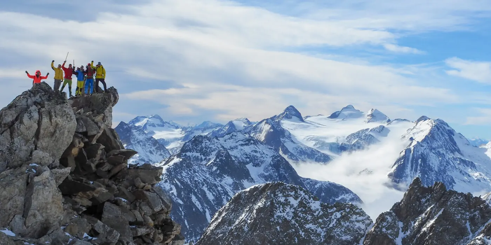
Courses, randonnées et sorties de la section
Randonnée, alpinisme, ski de randonnée, raquettes et escalade : le programme complet avec inscription en ligne.
Six cabanes du Passo Cristallina aux Denti della Vecchia, des cours donnés par des professionnels et un programme de courses pour tous les âges.
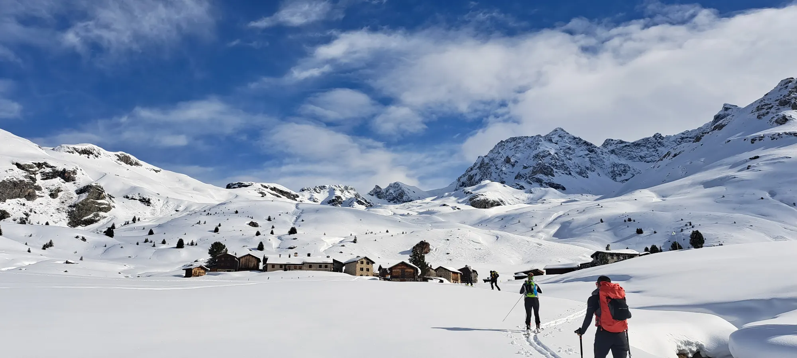
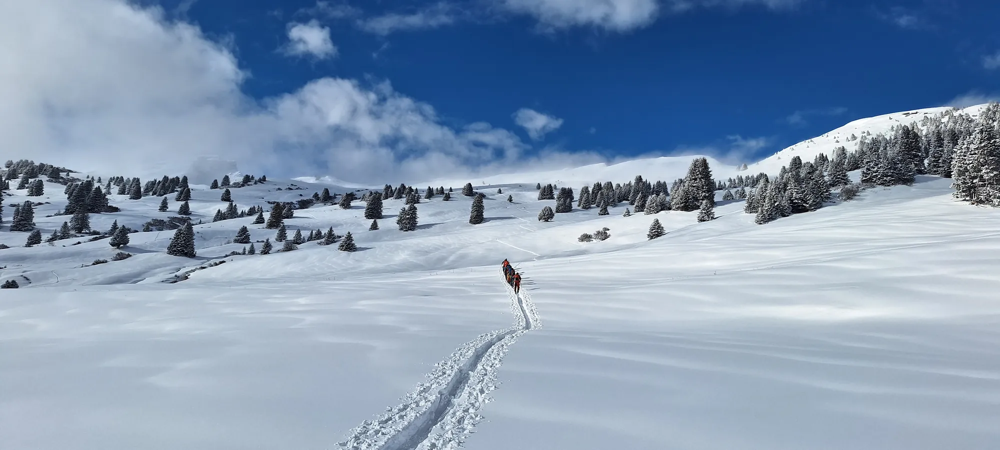
Des courses pour tous les niveaux, un groupe pour chaque âge et des cours pour apprendre à se déplacer en montagne en sécurité.

Randonnée, alpinisme, ski de randonnée, raquettes et escalade : le programme complet avec inscription en ligne.
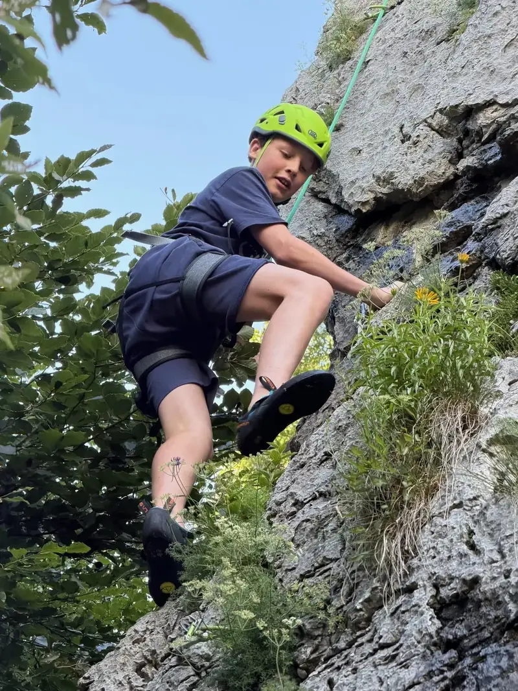
Escalade, randonnées et semaines en montagne avec les moniteurs de la section.
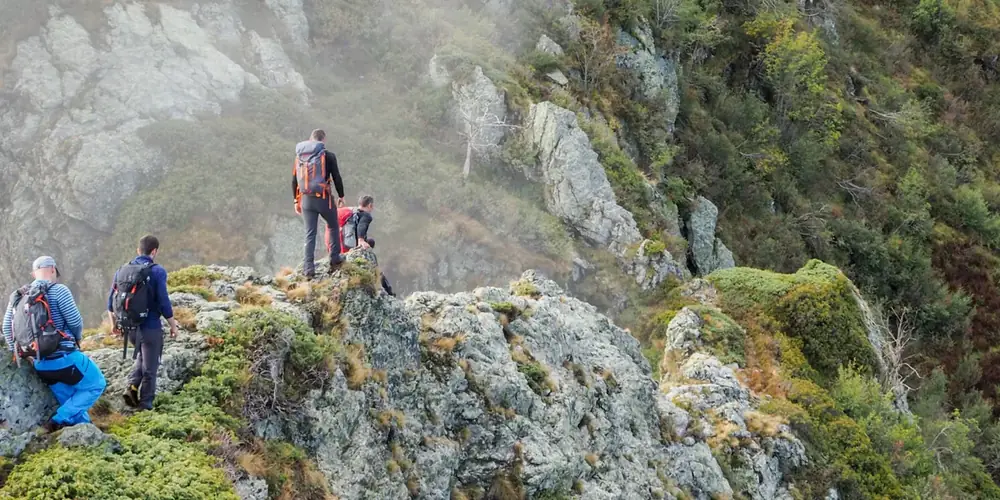
Des sorties hebdomadaires avec des chefs de course expérimentés, au bon rythme et en bonne compagnie, de la Capriasca aux Alpes.
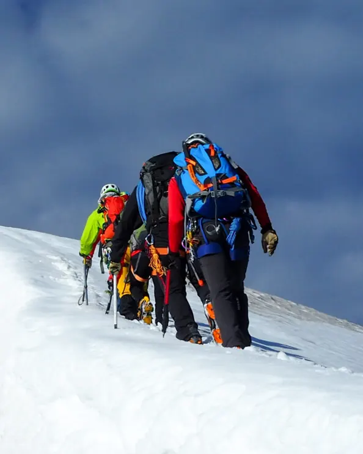
Alpinisme, ski de randonnée, escalade, freeride et raquettes : pour apprendre à se déplacer en montagne en sécurité.
24sam octobre, jusqu’au 25
Escalade · Membres actifs, Jeunesse
29jeu octobre
Événement · Seniors
31sam octobre, jusqu’au 3 nov.
Escalade · Jeunesse
5jeu novembre, jusqu’au 8
Escalade · Jeunesse
6ven novembre, jusqu’au 9
Escalade · Membres actifs, Jeunesse
12jeu novembre
Randonnée · Seniors
14sam novembre
Cours de formation · Membres actifs, Jeunesse
14sam novembre
Via ferrata · Membres actifs, Jeunesse
18mer novembre
Cours de formation · Membres actifs, Jeunesse
22dim novembre
Escalade · Membres actifs, Jeunesse, Seniors
Toujours ouvertes, gardiennées quand les gardiens sont présents. Avant de partir, contactez le gardien pour vérifier sa présence et les conditions en montagne.
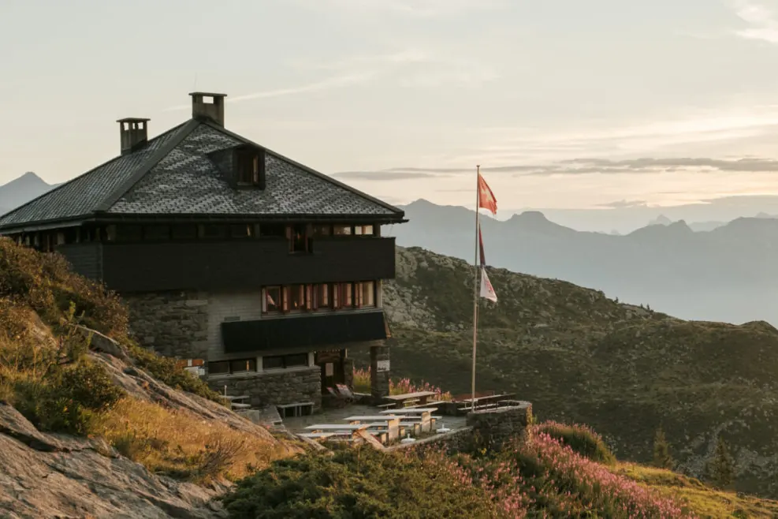


Nous cherchons des « abeilles ouvrières ». Les bénévoles aident les gardiens à ouvrir, fermer et entretenir les cabanes, et passent de belles soirées en altitude.
Je veux aiderDu matériel en location pour vos sorties et des petites annonces de matériel entre membres.
Crampons, piolets, baudriers, sets DVA avec sonde et pelle et bien plus, pour quelques francs par jour : pour les courses de la section et les sorties privées.
Demander du matérielMatériel de montagne entre particuliers : à vendre, recherché, à donner. Une annonce en ligne.
Voir les annonces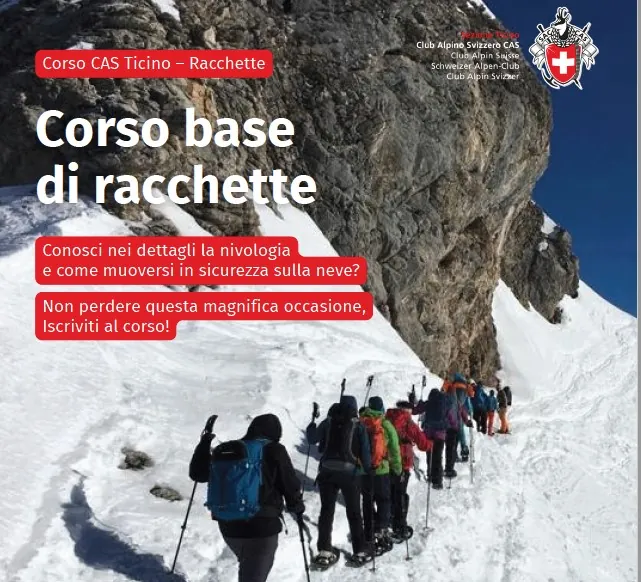
Conosci nei dettagli la nivologia e come muoversi in sicurezza sulla neve? Non perdere questa magnifica occasione, iscriviti al corso! Martedì 15 dicembre 2026 – ore 19.00 Serata di presentazione del corso. Martedì 12…
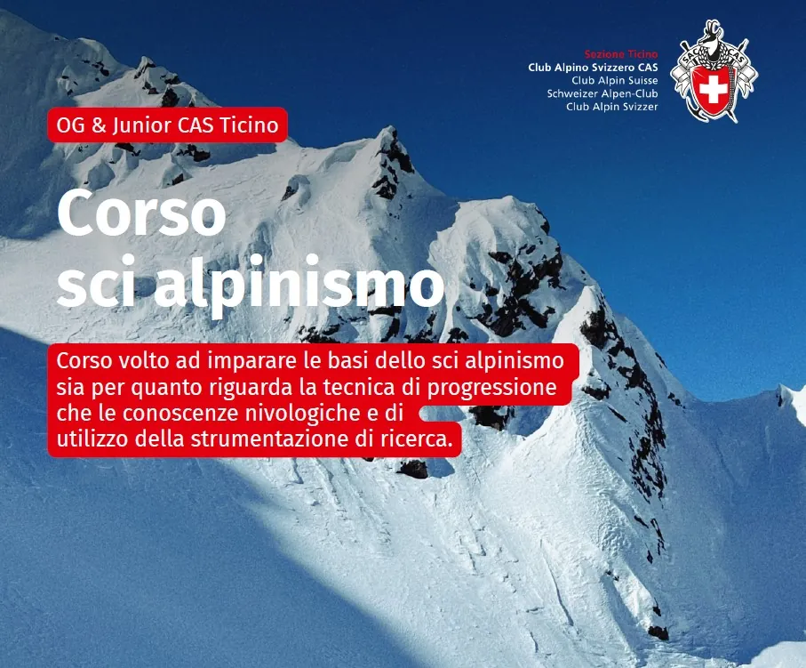
Corso volto ad imparare le basi dello sci alpinismo, sia per quanto riguarda la tecnica di progressione che le conoscenze nivologiche e di utilizzo della strumentazione di ricerca. Quando? Sabato 09.01.2027 Sabato…
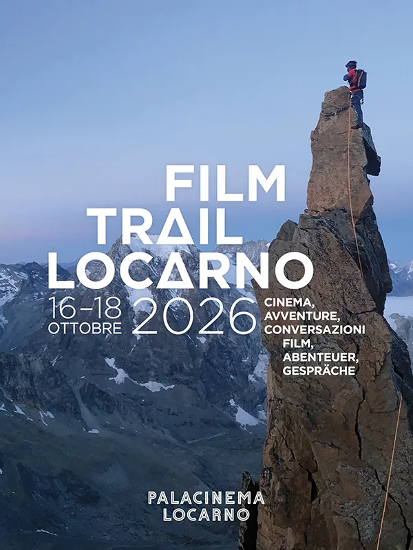
Dal 16 al 18 ottobre 2026 PalaCinema Locarno presenta Film Trail Locarno – Cinema, avventura, conversazioni, una nuova rassegna di cinema e incontri dedicata all’avventura, allo sport e alla natura, curata dal regista…
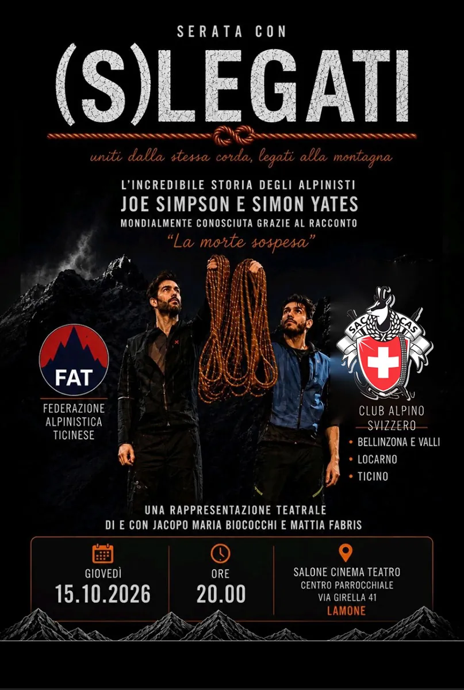
Il 15 ottobre in collaborazione con il CAS Bellinzona, il CAS Locarno e la FAT organizziamo uno spettacolo teatrale presso il Centro parrocchiale di Lamone con: (S)LEGATI Uniti dalla stessa corda, legati alla montagna…
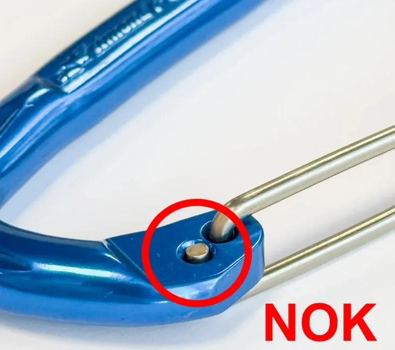
Richiamo prodotto. Informazioni importanti sulla vostra sicurezza e sull’attrezzatura. Avete acquistato un rinvio da arrampicata ALPINISM e/o VERTIKA tra il 1° gennaio 2022 e il 23 luglio 2026. Rinvio Alpinism 11 cm…
Le nostre capanne sono gestite in modo autonomo dai rispettivi custodi. Per qualsiasi domanda relativa al suo soggiorno, la preghiamo di rivolgersi direttamente alla capanna di suo interesse. Per effettuare una…
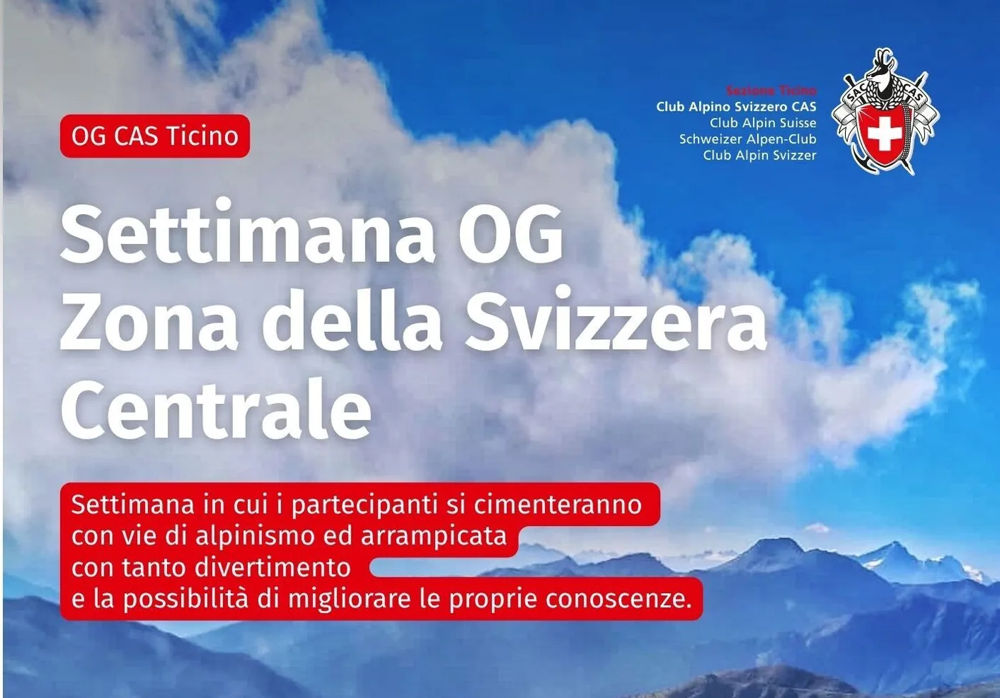
Quando? Da lunedì 24 a venerdì 28 agosto – OG Per chi? Dedicata al gruppo OG: dai 16 ai 25 anni Prezzo 400.- Capigita Claudio Petrini Esigenze Tecniche – PD La settimana sarà organizzata in modo che le ragazze e i…

Caro Socio, abbiamo il piacere di invitarti alla 141. ma Assemblea Generale Annuale che avrà luogo: domenica 10 maggio 2026 alle ore 18:00 Centro Parrocchiale Via Girella 41 6814 Lamone alle 15.00 mercatino dell’usato…
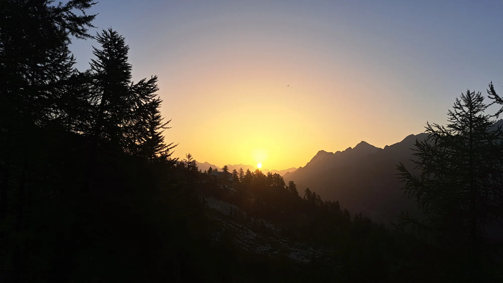
Des tarifs réduits dans les cabanes du CAS de toute la Suisse, des cours, des courses et une communauté qui aime la montagne autant que vous.